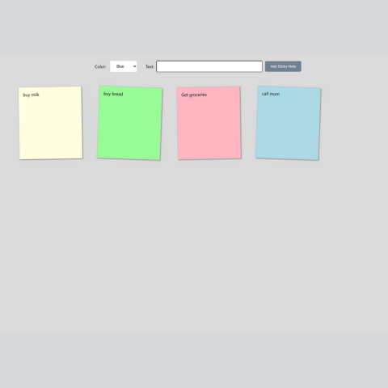
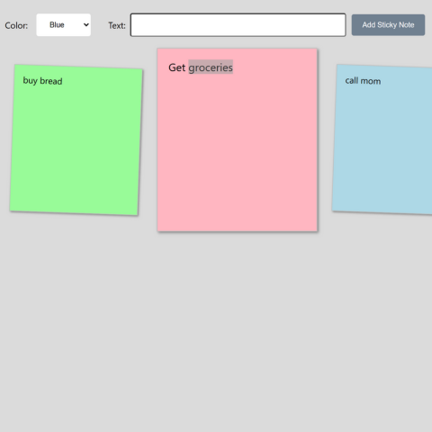

Sticky Notes
Late 2023, I was thinking about a project to work on. Seeing a stack of Post-It Notes on my desk, I wondered if I could recreate them on the web. I haven't seen such a project. At least none using React. This was my attempt to create that.
Sticky Notes: GitHub

Project Requirements:
Lessons Learned: My major takeaway from this project was that transcribing JavaScript to React is possible, but not a simple ask. Programming-wise, this project got me thinking about implementing component based styling. I may try that in the future.
Continued Development: No project is ever done, and here are some things I'd like to work on in the future if I circle back to this project: